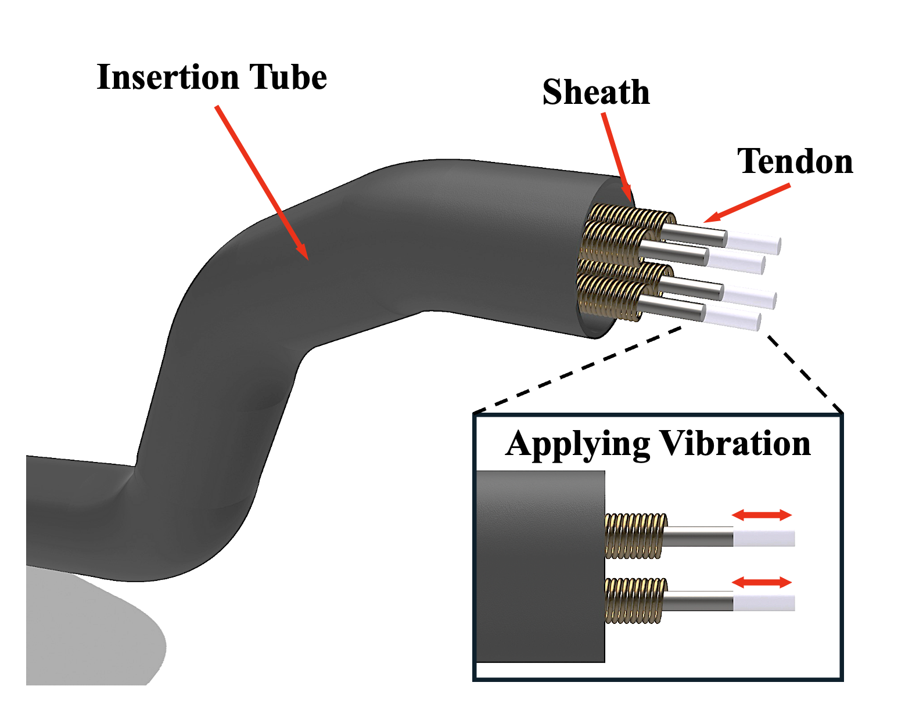
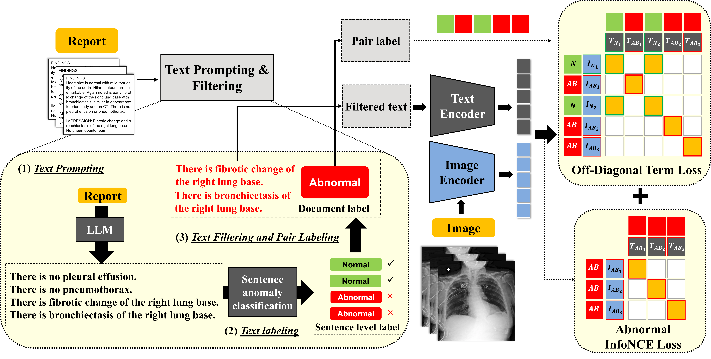
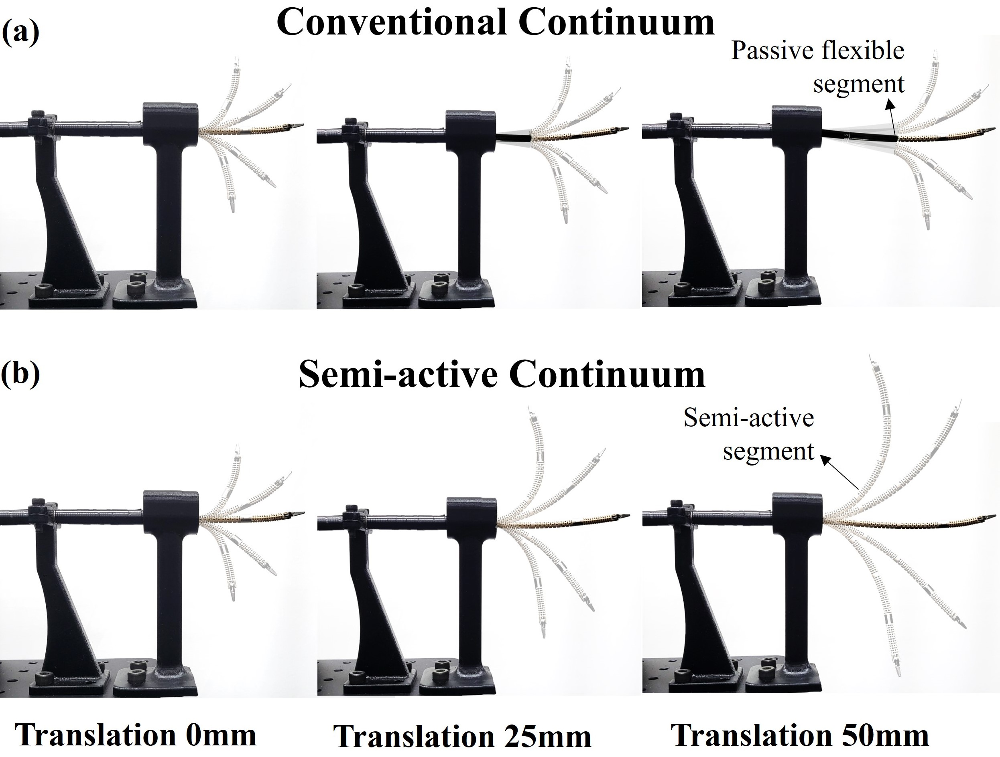
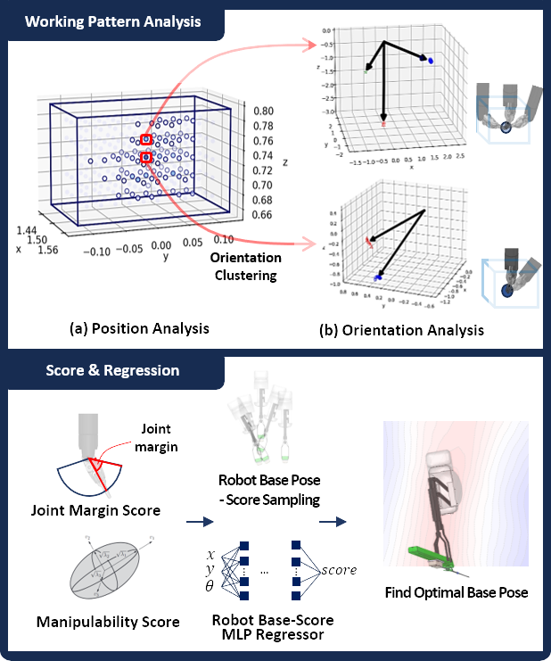
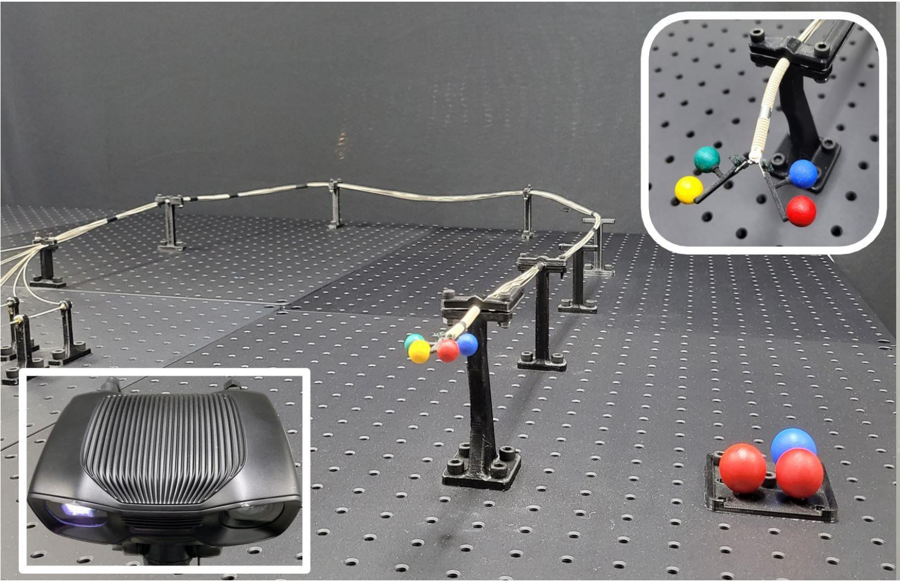
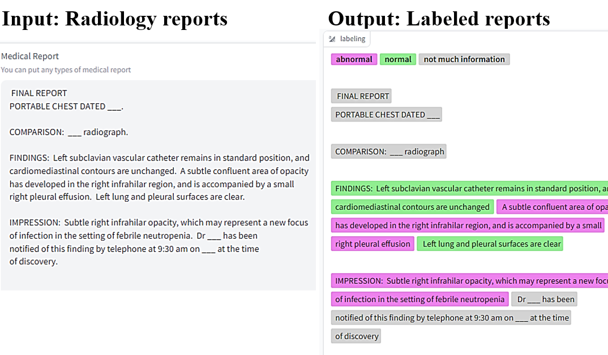

I am a master student at DGIST, advised by Prof. Minho Hwang. I received my Bachelor's degree in Computer Science and Electronic Engineering from DGIST in 2024.
During my undergraduate studies, I had the privilege of being advised by Prof. Minho Hwang at DGIST as an undergraduate researcher. Additionally, I was advised by Prof. Synho Do and Prof. Kyungsu Kim during my internship at Harvard Medical School and Massachusetts General Hospital.
I am interested in robotics, deep learning, biomedical engineering, and robot automation. My ultimate research goal is to develop fully automated surgical robots, including diagnostic automation. In this vision, AI analyzes a patient's X-ray, MRI, or other medical images to detect anomalies and plan the surgery. Using this diagnosis, a continuum manipulator—leveraging its scar-free advantages—would navigate through natural orifices to perform the procedure autonomously. This represents the future I strive to achieve in my research.
* states the Equal Contribution
|  |
Vibration-Assisted Hysteresis Mitigation for Achieving High Compensation Efficiency
Myeongbo Park*, Chunggil An*, Junhyun Park*, Jonghyun Kang, Minho Hwang arXiv, 2025 arXiv We introduce a vibration-assisted hysteresis compensation method for tendon-sheath mechanisms (TSMs) in minimally invasive surgery. Controlled vibration reduces friction and dead zones, improving trajectory tracking and decreasing RMSE by up to 23.41%. When combined with a Temporal Convolutional Network (TCN)-based model, it further enhances accuracy, achieving an 85.2% reduction in MAE. |
|  |
OFF-CLIP: Improving Normal Detection Confidence in Radiology CLIP with Simple Off-Diagonal Term Auto-Adjustment
Junhyun Park*, Chanyu Moon*, Donghwan Lee, Kyungsu Kim, Minho Hwang arXiv, 2025 arXiv We propose OFF-CLIP, which introduces an off-diagonal loss and sentence-level text filtering to improve normal detection and reduce false negatives. OFF-CLIP enhances normal classification (0.61 AUC increase on VinDr-CXR) and zero-shot anomaly localization without requiring architectural changes with the sota CARZero baseline. |
|  |
SAM: Semi-Active Mechanism for Extensible Continuum Manipulator and Real-time Hysteresis Compensation Control Algorithm
Junhyun Park*, Seonghyeok Jang*, Myeongbo Park, Hyojae Park, Jeonghyeon Yoon, Minho Hwang The International Journal of Medical Robotics and Computer Assisted Surgery (IJMRCAS), 2024 Paper / Video / arXiv This study present an extensible cable-driven continuum manipulator with a semi-active mechanism (SAM) and a TCN-based real-time hysteresis compensation algorithm. SAM improves lesion access, while TCN-based compensation enhances accuracy, potentially improving surgical performance |
|  |
Optimizing Base Placement of Surgical Robot: Kinematics Data-Driven Approach by Analyzing Working Pattern
Jeonghyeon Yoon* Junhyun Park*, Hyojae Park, Hakyoon Lee, Sangwon Lee, Minho Hwang IEEE/RSJ International Conference on Intelligent Robots and Systems (IROS) , 2024 Paper / Video / arXiv In robot-assisted minimally invasive surgery (RAMIS), optimal placement of the robot base is crucial for performance. This study introduces a machine learning approach to determine the best base pose based on the surgeon’s working pattern. By clustering recorded end-effector poses, key positions are identified, and scoring metrics address joint limits and singularities. A multi-layer perceptron regressor predicts the optimal base pose, showing a 28.2% improvement over random placement, emphasizing the need for operator-specific optimization in RAMIS. |
|  |
Hysteresis Compensation of Flexible Continuum Manipulator using RGBD Sensing and Temporal Convolutional Network
Junhyun Park*, Seonghyeok Jang*, Hyojae Park, Seongjun Bae, Minho Hwang IEEE Robotics and Automation Letters (RA-L), 2024 Paper / Video / arXiv This letter proposes a data-driven approach based on TCN to capture these nonlinear and previous states-dependent characteristics of cable actuation. Leveraging trained TCNs, we build a control algorithm to compensate for hysteresis. Tracking tests in task space using unseen trajectories show that the proposed control algorithm reduces the average position and orientation error by 61.39% (from 13.7 mm to 5.29 mm) and 64.04% (from 31.17◦ to 11.21◦), respectively. |
|  |
Integrating ChatGPT into Secure Hospital Networks: A Case Study on Improving Radiology Report Analysis
Kyungsu Kim*, Junhyun Park*, Saul Langarica, Adham Mahmoud Alkhadrawi, Synho Do Conference on Health, Inference, and Learning (CHIL), 2024 Paper / Huggingface / arXiv / Github This study demonstrates the first in-hospital adaptation of a cloud-based AI, similar to ChatGPT, into a secure model for analyzing radiology reports, prioritizing patient data privacy. By employing a unique sentence-level knowledge distillation method through contrastive learning,we achieve over 95% accuracy in detecting anomalies. |